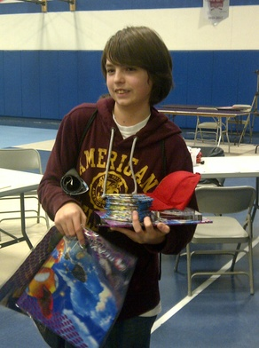
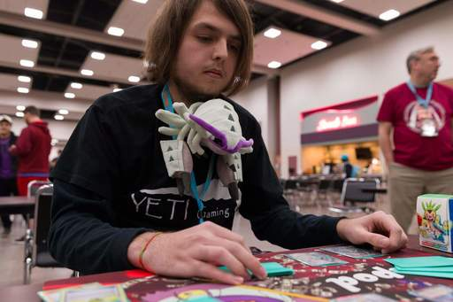
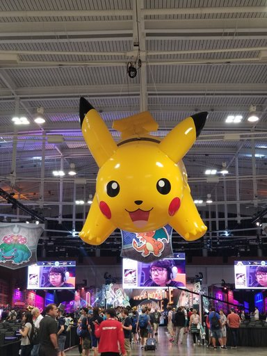

I first got interested in playing the Pokemon Trading Card Game (PTCG) in 2011. I started playing at a local card shop and eventually, my brother and dad also started to play with me. We all spent our first year playing trying to get better. We weren't the best at the game, but we all had a drive to get better. We began to take the game serious and travel to events all across the country. In my second year playing, I finally got a hang on the game. I eneded up winning my first city championships, getting 4th place at a state championships, and placing in the top 64 at the 2013 Pokemon National Championships. This year really help sparked my passion for playing and improving.

Me with my prizing for getting 4th at the 2013 Illinois State Championships
Once 2014 hit, I was pushed up into the highest age bracket for sanctioned play. Having been playing for 2 years, I was very excited to play with the best of the best. 2014 was a kind year for me in terms of placings. I had finally broken into a great placing at regional tournaments by getting 4th place at the 2014 Kansas regional. I had also gotten another top 4 at a state championships and won another city championships. Similar placings followed me in the next few years. In 2016 I ended up taking a year break from the game in favor of focusing more on high school. In 2017 the game had some shakeups and it rekindled my passion for the game. I used that year to get back into the swing of things in attempt to go all out in 2018.
For the 2018 Season I decided that my one goal would be to qualify for the World Championships. To do this players have to obtain qualification points by placing well at tournaments through the whole year. Things started off pretty well for me. By the end of the first quarter, I was on track to get my invite by the end. Unfortunately, work and school took over my life in the second quarter and I was very off pace at the end of December. At the time, I was beginning to have doubts about myself. This all changed once the third quarter hit. I had two very well placing regionals and began to become very motivated to finish out this grind. In the middle of the last quarter, I won a city championships in Columbia, MO to secure my invite for the 2018 Pokemon World Championships.

Me playing at the 2018 St. Louis Regionals
After getting my invite, I started to work on praciticing for the format that worlds would be played in. For card games, new cards come out every four or so months. A new set of cards was going to be legal for that event, so instead of trying to do well at current tournaments, I focused on only playing the worlds format. That August, I drove down to Nashville, TN and played in my first world championship. I was super exicited and had a blast. I was able to meet and play people from all over the world. I unfortunately did not do so well in the event. I was knocked out after round 5 of 7 rounds.

The venue for the 2018 World Championships
Present Day and the Future
After Worlds, I felt that I had obtained everything that I wanted out of the game. I haven't won any major tournaments, but I was able to earn some trophies to display and a ton of memories and friends. I also was starting to get burned out from basically living and breathing the game. I ended up getting a job at the card store I played at and am still there as the online shipping manager today. I still keep up with the game and my friends who play. Every here and there, I get a small itch to play, so maybe in the future I might try and compete again.